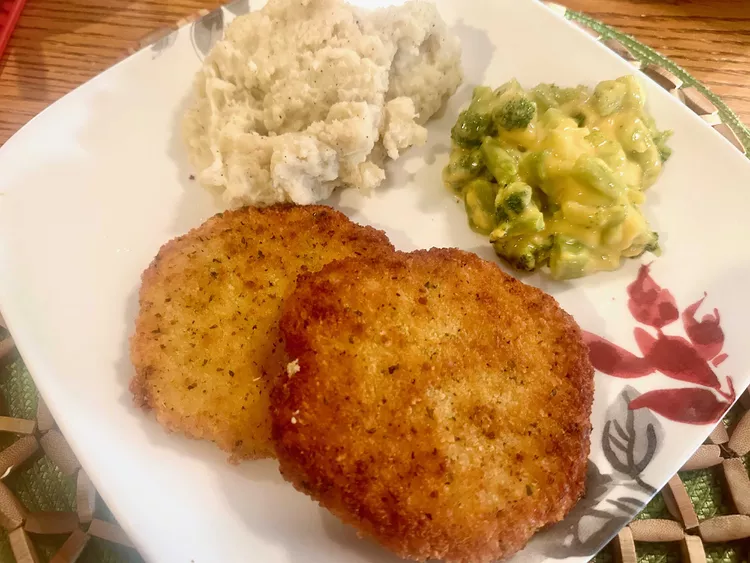

Vienna Schnitzel Recipe

Description
Recipe created by FRANKHA
Ingredients
- 1 quart oil for deep frying
- 6 (6 ounce) fillets pork sirloin
- 2 cups dry bread crumbs
- 1 cup cake flour
- 2 eggs
- ¼ cup milk
- salt and ground black pepper to taste
Steps
-
Heat oil in a deep fryer to 350 degrees F (175 degrees C).
-
Place fillets on a solid, level surface and pound with the smooth side of a meat mallet until 1/8- to 1/4-inch thick.
-
Place bread crumbs and flour in two separate dishes, such as soup plates. Lightly beat eggs in a third dish, such as a soup plate. Add milk; lightly season with salt and black pepper.
-
Dredge fillets in flour, patting lightly by hand. Dip into egg mixture, using a fork to hold fillets; let excess drip off. Press into bread crumbs to coat both sides fillets. Place breaded fillets, unstacked, onto a plate.
-
Deep fry fillets until golden brown.
Back to the Home Page